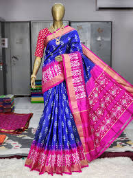

An eminent geographical indication, pochampally sarees find their home in the state of Telangana.
Pochampally sari or Pochampalli ikat is a saree made in Bhoodan Pochampally, Yadadri Bhuvanagiri district, Telangana State, India. They have traditional geometric patterns in "Paagadu Bandhu" style of dyeing. The intricate geometric designs find their way into sarees and dress materials
Pochampally sarees are made using a traditional textile dyeing technique called Pochampally Ikat, which involves tying silk yarns in bundles and wrapping them in a geometric pattern. The yarns are then dyed, and the untied yarns are arranged on a loom to be woven into the fabric. The areas where the yarns are tied do not absorb the dye, creating a unique pattern. The tight wrapping on the yarns differs from one saree to another, thus, explaining distinct designs. The sarees are characterized by their "chowkra" patterns, which look like waves with diffused edges or diamonds inside a square. The cloth used is usually either cotton or silk
